--------点击蓝字关注我--------
微信号：gaoxiaomao88
--------点击蓝字关注我--------
微信号：gaoxiaomao88
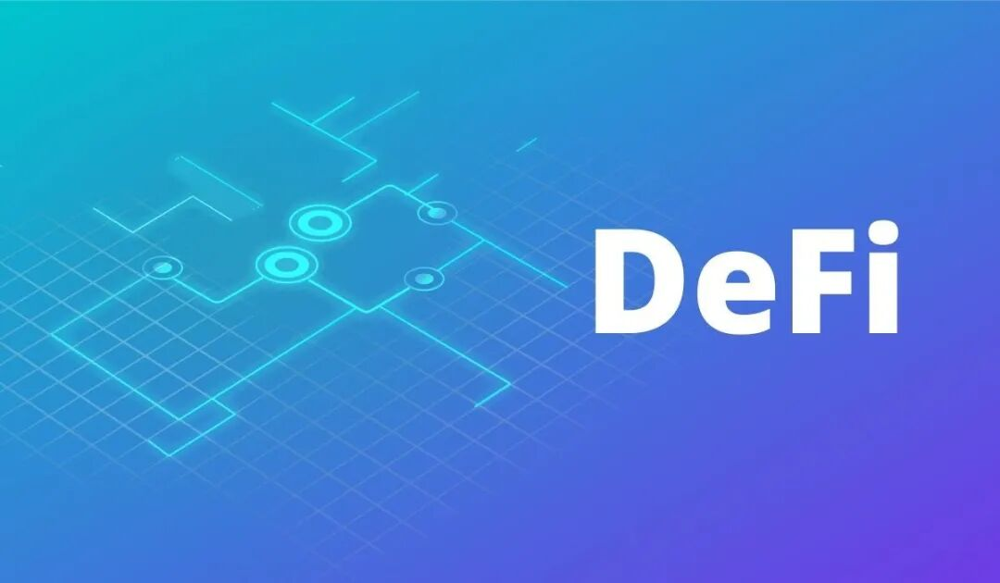
最近我关注以太坊上的Defi（decentralized finance， 去中心化金融）比较多，因此好几期文章都没来得及写。
最近行情稍稍有些缓和了，抽了一个周六的时间，来聊聊最近发生的一些事情，普及一些知识。
考虑到很多读者对于区块链，以太坊（ETH）都不是很熟悉，我想先从最基本的讲起，尽量用比较简单的语言把Defi大致的框架介绍一下，这样后面聊的很多东西才会对读者有意义。
一. 什么是区块链？
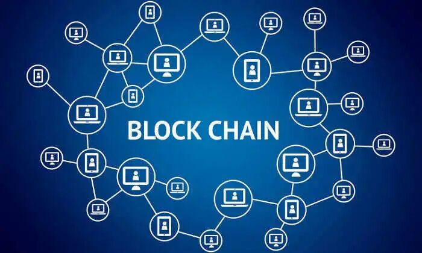
所谓的区块链，其实就是一个去中心化的数据库。
中心化的数据库很好理解。比如微信支付的背后就是一个中心化的数据库，数据库上有每一个用户有多少钱的数据，也只有微信可以修改这些数据。
如果有人的账号涉嫌违法行为，微信完全可以把资金冻结，把账户上的钱抹去。
那么什么是区块链技术下的去中心化的数据库呢？
所谓的去中心化数据库，就是说它上面的数据修改并不是一个中心化的机构说了算的，而是只有账户的持有人才能说了算。
在这个数据库中，每个人的账户上的钱是真正属于这个人的，要冻结对应的资金，只有这个户主自己才能做到。
户主怎么证明一个账户属于他自己呢？
每个账户会有一个私钥，类似于一个密码。每次要对这个账户做任何操作的时候，只要提供这个私钥，就可以进行操作。
计算机密码学有一种很简单的办法，可以在向别人证明自己有私钥的同时不把这个私钥交给别人。
一旦一个户主证明了一个账户属于他自己，每当他需要对这个账户做一些操作的时候，区块链上就会有一些人拿着这个证明，帮户主在这个去中心化的数据库上做对应的修改，比如转账之类的操作。
这些帮忙做修改的人叫做矿工，因为做修改的资格是需要抢的，谁抢到这个资格以后可以得到一定的资金奖励。
如果上面的解释太复杂，你只要记得区块链就是一个能让你真正控制账户里钱的微信支付就行了。除了你自己以外，谁也没法拿走账户里的钱。
二. 什么是以太坊（ETH）？
以太坊区块链是世界上第二大的区块链系统（第一大是比特币的区块链系统）。
上面我们说区块链是一个去中心化的数据库，以太坊区块链也一样，记录了非常多的数据。
它上面最重要的数据就是每个用户的账户地址，账户上每一种货币的金额，以及账户之间的转账交易金额的历史记录。
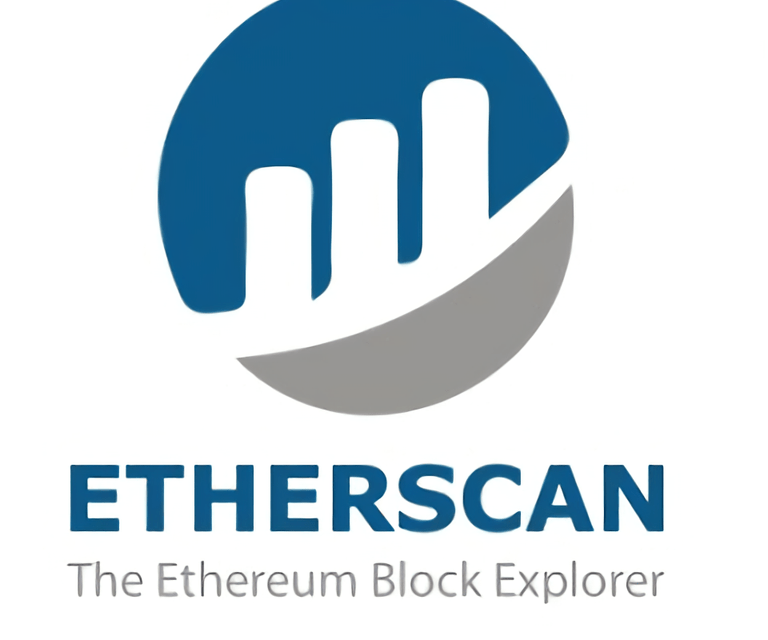
Etherscan是最常用的查询以太坊链上数据的平台
你就可以想象以太坊就类似于一个微信支付系统，只不过每次你要把钱转给别人的时候，不是让微信帮你修改它的那个中心化数据库，从而把钱转过去。
你需要找以太坊区块链上的矿工证明你拥有账户的私钥，然后他们会帮你修改以太坊区块链上的去中心化数据库，从而把钱转过去。
如果没有你的私钥，任何人不能动你的钱。
不过以太坊区块链上的货币并不是人民币或者美金。在以太坊区块链上流通最大的货币是以太坊（ETH）这种货币。
以太坊不仅仅用于当做支付手段，每当你在以太坊区块链上需要找矿工帮你转账的时候，你也需要支付以太坊给矿工来作为转账费。
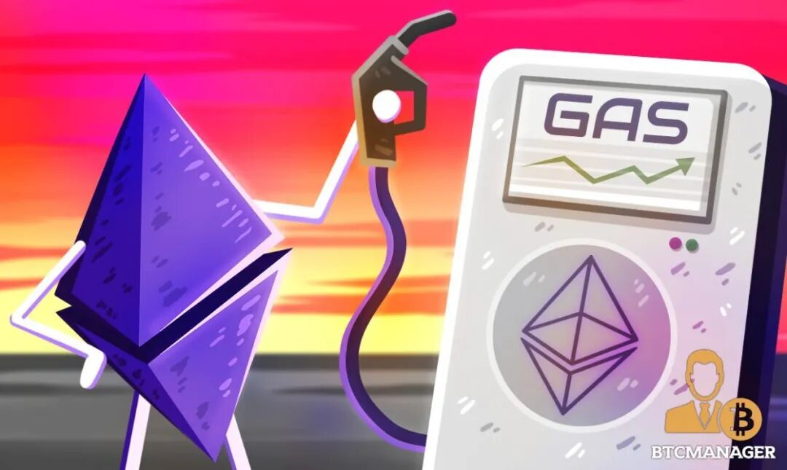
一般以太坊上的转账费通常被称为gas fee
以太坊虽然是以太坊区块链上流通量最大的货币，但是这种货币类似于比特币，价格波动很大。
为了解决这个问题，有一些人开始把美金变成可以在以太坊上流通的货币，通过一些方法保证它的价值永远都是一美金，这种货币被叫做稳定币。
目前在以太坊区块链上有三种最有名的稳定币，分别是coinbase发行的USDC，bitfinex发行的USDT，以及MakerDao发行的Dai。
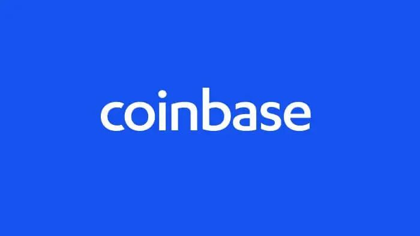
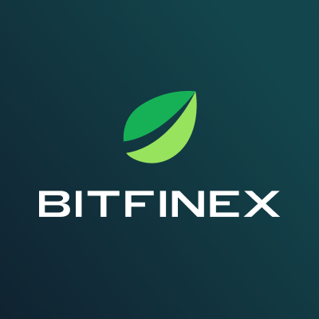
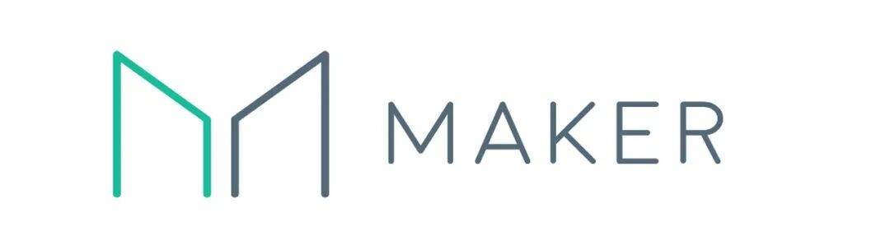
这三种货币的价值分别由这三个机构作为担保，保证它始终可以有一美金的价值。
三. 什么是去中心化交易所？
在解释去中心化交易所之前，我先解释一下中心化交易所。
如果你今天去美股市场上买一股特斯拉的股票，你的账户上就会显示你拥有一股特斯拉的股票。
特斯拉：1股
类似地，如果你今天去coinbase上买一个以太坊，你的账户上就会显示你拥有一个以太坊。
ETH：1个
当你使用coinbase这种交易所的时候，你购买的以太坊其实并不在你自己的以太坊区块链的账户上，因为你并没有这个账户的私钥。
ETH：1个 （在coinbase的账户上）
当你需要转账的时候，你需要让coinbase这个交易所帮你向矿工出示这个并不由你控制的账户私钥，才能把以太坊转账出去。这种需要“把钱存在交易所账户上”的交易所，统称为中心化交易所。
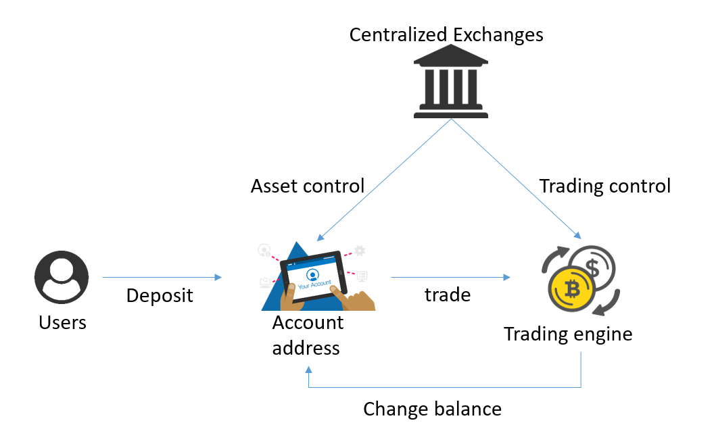
那么去中心化交易所是什么呢？显然就是“把钱存在你自己账户上”，但是还能做交易的交易所。
在平时，钱是存在你自己的账户上的，这个账户的私钥是你自己控制的。
每当你需要交易的时候，你就找一家去中心化交易所，按照一定的比例给去中心化交易所转一定量的A货币，换回一定量的B货币。
这个感觉有点类似于在机场的外币兑换商兑换外币，交易是当场完成的，一手交A钱，一手拿B钱，永远不存在交易所拿着你的钱去干些别的什么事情的可能性。
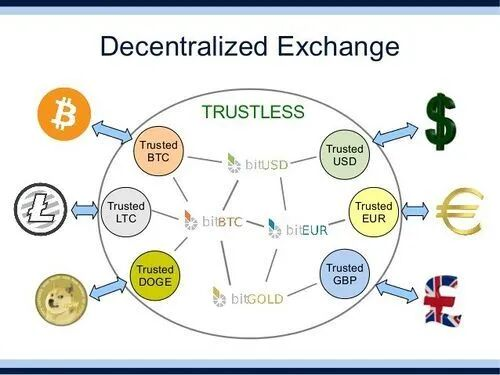
四. 去中心化交易所的优缺点
一直到2020年以前，去中心化交易所其实一种非常小众的存在，这主要是因为它非常地不好用。
为啥这么不好用呢？最主要的原因是因为交易深度很浅，滑点太高。
通俗来说，就是交易所参与的人太少，没有对手盘，所以一旦交易的量大一点，价格就非常地不合理。
还有一个原因，就是去中心化交易所没有办法像传统的股市里面那样挂单，也没有各种k线的显示，因此大家使用起来并不太习惯。
不过它相对于中心化交易所也有优点。这就要说到中心化交易所的一个顽疾：人为制造假交易。
大部分的交易所其实都有刷单的行为，因为一个交易所越是交易量少，深度浅，愿意来这边交易的人就越少，因为做交易的时候稍微买一点或者卖一点，价格就波动很大，非常不划算。
交易所通过制造假的交易行为，就可以创造一种繁荣的假象，吸引大家来上面做交易。
类似地，交易所还经常被人指责它恶意爆仓。
简单来说，交易所通过制造假的交易，可以很容易地在一个很短的时间区间内控制价格。而在带杠杆的交易中，如果杠杆加的比较大，稍微一波动可能就爆仓了。
很多加杠杆做交易的人会指责交易所通过人为地控制价格，来恶意地暴他们的仓，从而把他们的钱赚走。
除此之外，还有很多人指责交易所拿用户存在交易所里的币来恶意砸盘，然后在低价再买回来，从而赚取差价。
总而言之，只要把币存在交易所，交易所无论做什么，用户都是没法知道的。尤其绝大部分的区块链中心化交易所都开在一些无法监管的区域，因此也没有法律可以管到他们。
而去中心化交易所则没有这个问题，因为所有的交易记录都在以太坊区块链上清清楚楚地有记录，任何人都可以查得到。
而且如果交易所拿自己的账户刷单，会有巨大的成本，因为以太坊区块链上转账是要给矿工付转账费的。
五. 去中心化交易所的崛起
去中心化的真正崛起其实就是从今年的7月刚刚开始的。
2020年初的时候，以太坊上最大的去中心化交易所uniswap的锁币量只有1400万美金，到了2020年7月的时候，这个数字还只翻了两倍，到了6300万美金。
从7月开始，这个数字开始爆发式增长，到8月21日，已经达到2.7亿美金，到今天9月20日，已经达到19.37亿美金，这个数量已经超越了coinbase，这个全世界最重要的中心化交易所之一。
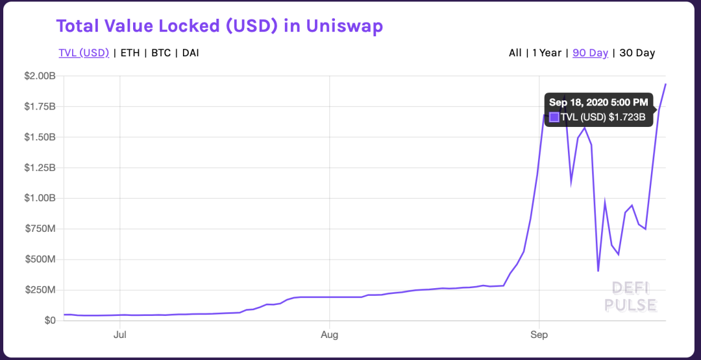
为什么它会有这样的爆发式增长呢？这主要是因为去中心化交易所采用了一种所谓的“流动性挖矿”的机制。
说到这里就要解释一个流动性的概念。简单来说，流动性就类似于一个外汇兑换商的准备金，
如果它要提供外汇兑换业务，那他这里首先要有一定量的各种各样的货币才行。
而且它这边各种各样的货币的绝对数量越多，在它这边兑换的比率越好。
---- 这里我做了一个假设，就是这个外汇兑换商是不知道所有这些货币在外面市场上的价格的，全部都是根据自己的准备金的数量来决定兑换比例的。
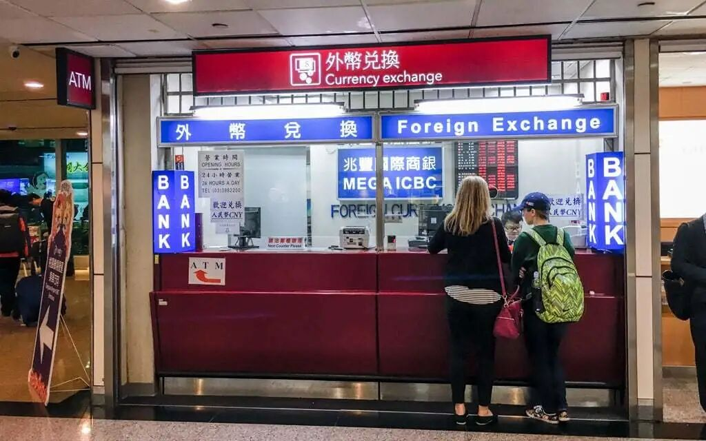
为了提高流动性，去中心化交易所就需要鼓励用户把他们的闲置资金存到交易所里作为储备金。
去中心化交易所一开始的鼓励方式是把所有的交易手续费平均地分配给所有的准备金提供商。
比如世界上最大的去中心化交易所，uniswap会向所有的兑换者收取千分之三的手续费，平均地支付给准备金提供者。
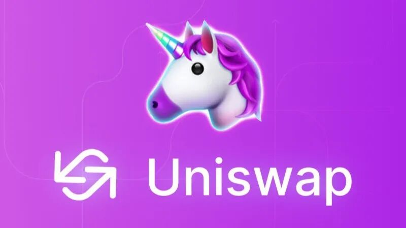
不过这个老的鼓励方式在几周前被一个叫sushiswap的uniswap的挑战者改写了。
sushiswap认为这样的奖励方式对于早期提供准备金的那部分用户是非常不公平的，因为他们才是对平台贡献更大的那一群人，帮助一个交易平台从无人问津到逐渐兴旺。
sushiswap完全抄袭了uniswap的界面，但是把千分之三手续费中的千分之零点五单独拿了出来。
他们发行了一种叫sushi的代币（类似一种证券），所有持有这种代币的人都可以分享那千分之零点五的手续费。越是早期提供准备金的用户，越是可以拿到更多的sushi代币。
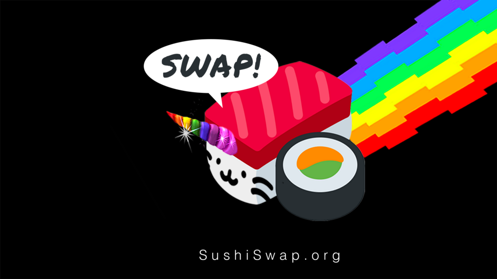
sushiswap的logo是一个把独角兽做在sushi里的样子，暗示他们的内核就是uniswap
仔细想来，sushi这种代币类似于是一个去中心化交易所的股权。只要持有这个股权，就从公司收取的交易费中分红。
不仅仅如此，sushi这种代币还可以对于去中心化的一些重大决议进行投票。
这种做法就类似是，如果存钱到美股某个交易所，每存一天，就给你一定比例的这个交易所的股票，以后交易所的交易费都可以给你分红。
为了拿到更多的这种sushi的代币，大量的人们涌入sushiswap的交易平台，为他们提供准备金，以便拿到更多的sushi代币。sushi代币也在市场上一度被爆炒到很高的价位。
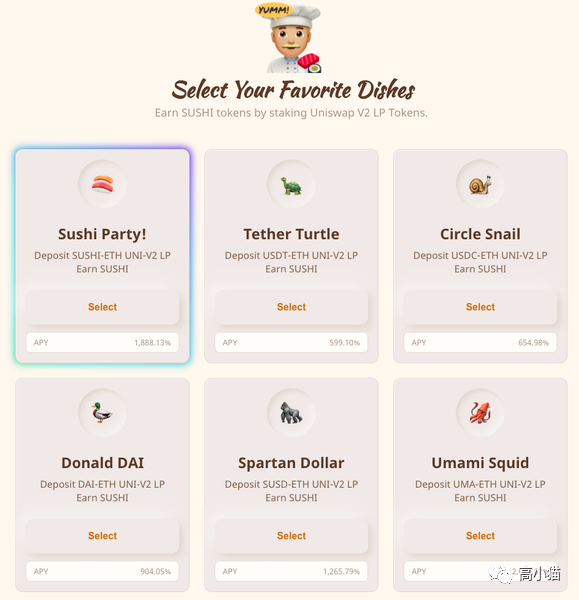
由于大量的准备金被sushiswap夺走，uniswap也发行了自己的代币uni，功能完全类似。由于它原本就是这个领域的老大哥，所以一下子把sushi上的流动性夺回了好多。
不仅如此，它还把非常多中心化交易所的代币也吸引了过来。大量的人把交易所里的以太坊，USDC等资金都提了出来，提供给Uniswap做准备金，以便领取uni这种代币。
uniswap还很大方地给所有曾经在他们平台上做过交易的用户，以及曾经提供过流动性的用户都发了400个uni代币。
按照现在每个uni 5-6美金的价格，相当于2000-3000美金。有人估算他们大约一共送出去1.5-3亿美金的资金给用户。
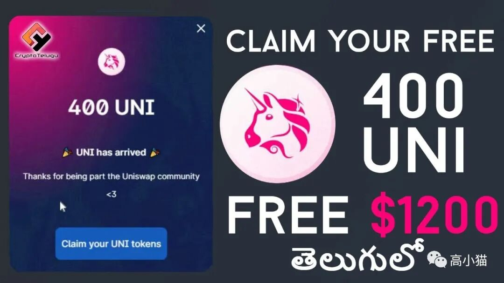
曾经给sushiswap上提供准备金，年化可以达到1000%。不过这只持续了两周。现在uniswap上面大概有30-60%的年化，不过也已经相当不错了。
六. 总结
去中心化交易所仅仅是去中心化金融（Defi）的一个小分支。除此以外这个领域还有各种去中心化金融衍生品，保险，放贷，基金等等业务。
我相信这个世界的故事还只是刚刚开始。这个世界会有很大的泡沫，泡沫也终将破掉，但是破掉以后会有一大群真正有价值的东西成长起来，成为参天大树。
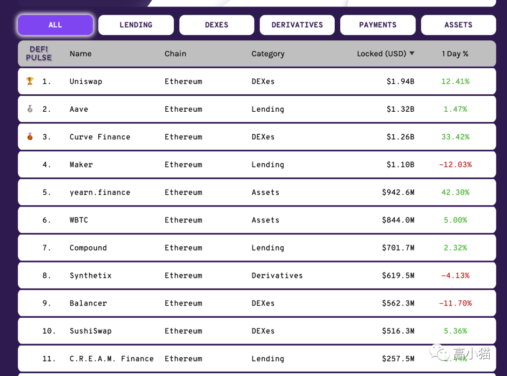
Defipulse.com是知名的defi排名网站，列举了前十的defi项目
大家如果有什么有关defi想了解的可以给我留言~还有大家如果想要稍微买一些币的话，推荐用下面这两个大平台。
coinbase是全球最大的法币与虚拟币的交易平台，币安则是全球最大的虚拟币之间的交易平台，所以都是有安全保障的。我个人coinbase用了超过5年，币安超过3年，我觉得这两个平台还是相当可靠的。
coinbase：用下面这个链接注册买入100美金比特币的话，可以送10美金的比特币。
https://www.coinbase.com/join/gao_1r
binance（币安）：用下面这个链接注册的话，可以节省10%的交易费用。
https://www.binance.com/en/register?ref=IP5PMHQ5
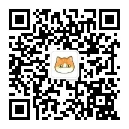
扫码关注我~